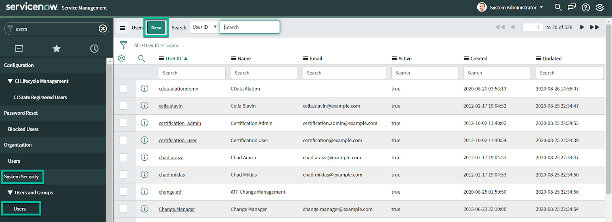
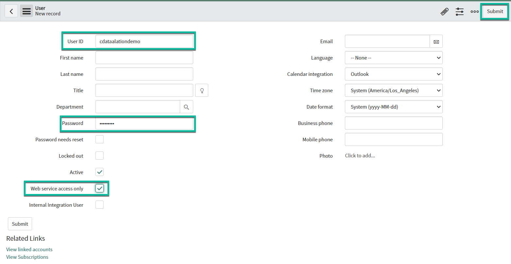
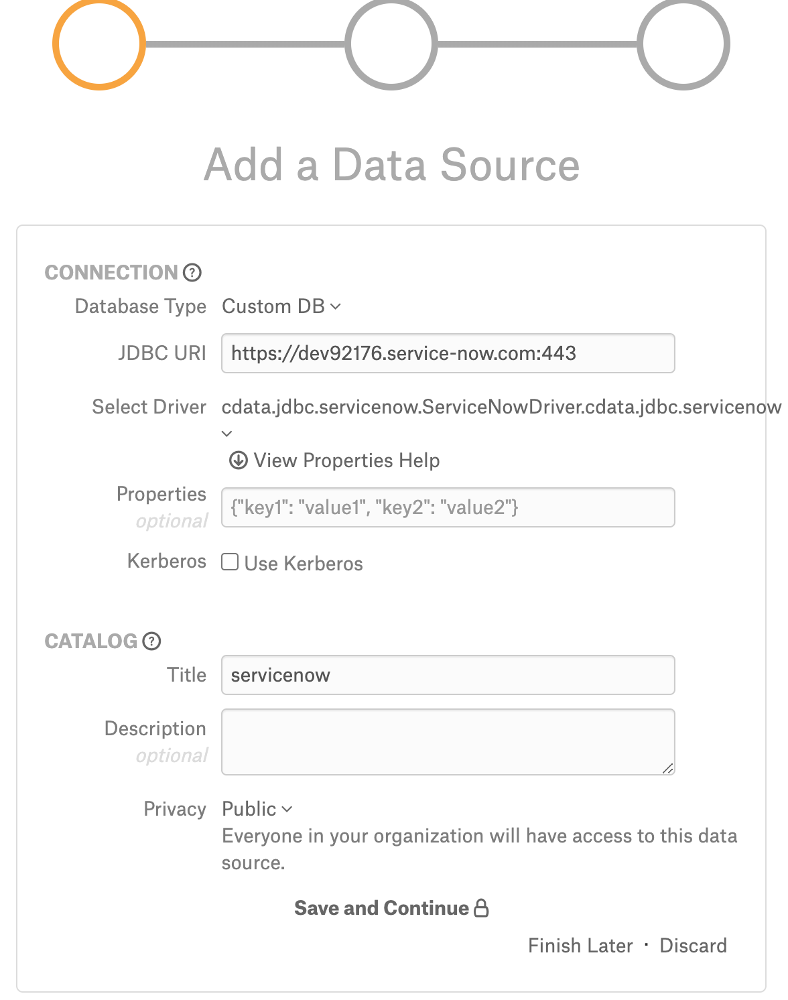

ServiceNow¶
Applies from version 2020.4
The main use case for ServiceNow is metadata extraction and curation of the ServiceNow objects. ServiceNow is supported with the Custom DB functionality. Alation has certified the following driver for ServiceNow data sources:
cdata.jdbc.servicenow.ServiceNowDriver.cdata.jdbc.servicenowAlation can provide the above mentioned CData driver license for ServiceNow. Refer to How to get a CData Driver and use the scenario appropriate to your case.
Scope of Support¶
Supported as Custom DB with the CData JDBC Driver for ServiceNow.
Metadata Extraction (MDE)
Automated MDE
Sampling
Compose
Limitations¶
Query Log Ingestion and Lineage are not supported.
Ports¶
Port 443 must be open.
Required Information¶
JDBC driver used to connect to the database: CData JDBC Driver for Service Now
JDBC URI parameters for the ServiceNow data source:
OAuth Client ID
OAuth Client Secret
User
Password
Instance
OAuth Access Token
RTK - Use the RTK parameter only if you have the RTK provided by Alation.
ServiceNow service account credentials
Service Account¶
Perform the following steps to create a ServiceNow service account:
Login to the ServiceNow Instance.
Go to System Security > Users > New.
Provide the User ID and Password; Select the Web service access only checkbox and click Submit. Ensure that you make a note of the provided User ID and Password because it will be used in the JDBC URI.

URI¶
Metadata Extraction from the ServiceNow data source requires an OAuth Access Token that should be included as one of the parameters. This token can be obtained using Compose after the data source is added to Alation.
When initially adding your ServiceNow data source, first add it using a URI without the OAuth Access Token and including the following parameters:
OAuth Client ID
OAuth Client Secret
User
Password
Instance
RTK
The JDBC URI must be entered without the “JDBC” tag at the beginning:
Pattern:
servicenow:OAuthClientId=<value>;OAuthClientSecret=<value>;User=<value>;InitiateOAuth=OFF;Password=<value>;Instance=<value>;Other='Catalog=ServiceNow';RTK=<RTK_Code>
Example:
servicenow:OAuthClientId="eb0b62aec57a1010926f6a8133de74d4";OAuthClientSecret="demo123";User="";InitiateOAuth=OFF;Password="";Instance="dev84014";Other='Catalog=ServiceNow';RTK=444752465641535552425641454E545042424D33323632390000000000000000414C4154494F4E5800005559475655474E4E464242370000
In order to obtain the values of the required parameters, register an app following the steps in Create an OAuth App in the ServiceNow documentation. This will generate the values for parameters:
OAuth Client ID
OAuth Client Secret
Using these values, construct the URI according to the pattern given above and proceed to adding the data source.
After you have successfully added the source, you will need to connect to it in Compose, obtain the OAuth Access Token and update the URI on the Data Source Settings > General Settings page. This is described in the sections below.
Preliminaries¶
Add the CData Driver to Alation¶
Steps in Alation¶
Step 1: Add a Data Source¶
Add a new data source on the Sources page.
Step 2: Set up the Connection¶
On the Add a Data Source screen of the wizard, specify:
Database Type: Custom DB
JDBC URI: Provide any valid URI with port number 443. This is only a temporary URI to move through the Add Data Source wizard.
Example: https://dev92176.service-now.com:443
Note
The correct JDBC URI must be provided on the General Settings tab of the data source Settings page.
Select Driver: select the JDBC driver for ServiceNow from the Select Driver drop-down list:
cdata.jdbc.servicenow.ServiceNowDriver.cdata.jdbc.servicenowClick Save and Continue. The next wizard screen - Set Up a Service Account - will open.
Note
Do not select the Kerberos Use Kerberos checkbox.
{kind=link}
Step 3: Enter Service Account Credentials¶
Select the Yes button.
Provide the username and password of the service account created for Alation.
Click Save and Continue. The next wizard screen, Configure Your Data Source, will open.
Step 4: Configure Your Data Source¶
Click Skip this Step. After this step, you are navigated to the Settings page of your data source.
General Settings¶
Once you successfully create a connection, you will land on the General Settings page. To perform Metadata Extraction, include the OAuth Access Token in the existing URI. Do the following steps to obtain OAuth Access Token:
Go to Compose and connect to it using the Service Account credentials.
Click the plus icon and modify the URI as constructed in the URI section. Click Add & Use.
{kind=link}
Run the following command in Compose. Provide the callback URL that is provided during the OAuth App creation.
EXEC GetOAuthAccessToken @CallbackUrl='<Call back_url>'
Example:
EXEC GetOAuthAccessToken @CallbackUrl='http://localhost:3333'
Copy the OAuth Access Token.
Go to the Settings > General Settings page and do the following:
Add the obtained Oauth Access Token to the existing URI.
Remove the following parameters from the existing URI:
User
Password
Set the InitiateOAuth parameter value to REFRESH.
Pattern:
servicenow:OAuthClientId=<value>;OAuthClientSecret=<value>;InitiateOAuth=REFRESH;Instance=xxxxxxxxx;OAuthAccessToken=<value>;Other='Catalog=ServiceNow';RTK=<RTK_Code>Example:
servicenow:OAuthClientId=eb0b62aec57a1010926f6a8133de74d4;OAuthClientSecret=demo123;InitiateOAuth=REFRESH;Instance=<dev60030>;OAuthAccessToken=<OAuthToken>;Other='Catalog=ServiceNow';RTK=444752465641535552425641454E545042424D33323632390000000000000000414C4154494F4E5800005559475655474E4E464242370000
Metadata Extraction¶
Configure and perform metadata extraction and verify the results:
Automatic full and selective MDE is supported.
In Settings > Custom Settings, you can set the Catalog Object Definition to Schema.Table to remove any driver-imposed prefixes from the metadata object names.
Profiling¶
Not applicable.
Query Log Ingestion¶
Not applicable.
Compose¶
Log into Compose:
Authenticate compose with your ServiceNow credentials.
Use the Schema.Table format for writing queries.
Troubleshooting¶
Logs to collect/review:
For logs related to MDE: taskserver.log, taskserver_err.log.
For logs related to Compose: connector.log, connector_err.log.
For any other errors: alation-error.log, alation-debug.log.